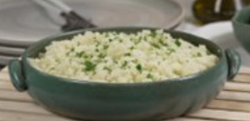

Arroz de Couver-Flor
- Arroz
- Couve-Flor
- Cebola Média
- Azeite
Deixe a couve-flor picada. Adicione os ingredientes e refogue bem, Adicione sal, tampe a panela e deixe cozinhar.
Bolo de Café

- Farinha de Trigo
- Acucar
- Café Coado
- Chocolate em Po
- Ovos
Bata o acucar, as gemas e o café. Adicione farinha e chocolate e mexa bem. Bata as claras e junte a mistura.
Coxinha de Brigadeiro

- Leite Condensado
- Chocolate
- Manteira
- Morango
- Chocolate Granulado
Junte o leite condensado, chocolate em po e manteiga. Aqueca no fogo baixo. Envolva os morangos e passe no granulado.